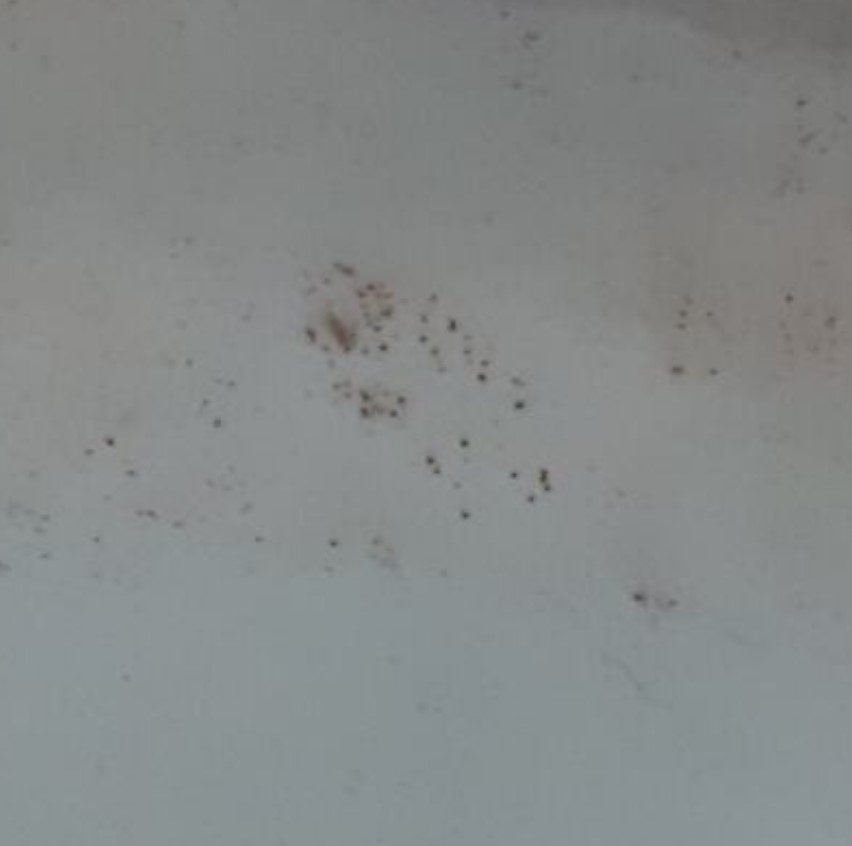
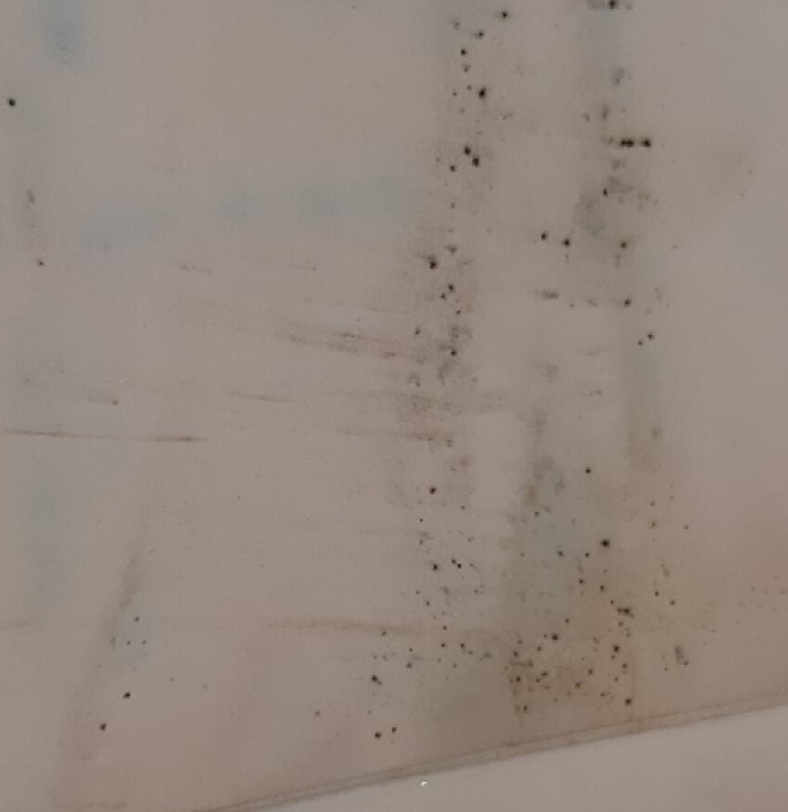

Mould stains
Smearing of the mould suggests possible active mould
Mould
Description
Another word for fungi; mould spores can germinate and grow within organic materials to cause staining and structural weakening. May appear as colourful powdery or downy growth on an object’s surface, or as black spots. Potentially hazardous as inhalation of active mould spores can result in respiratory complications -- be sure to wear masks and work with a fume hood and protective equipment if suspected to be active mould.
Treatment Notes
- If it is an active mould (smears instead of powders), ensure staff who is handling takes necessary precautions to avoid ingestion. Control of temperature and humidity to keep mould dormant
Materials Affected
Paper, Book, Textile